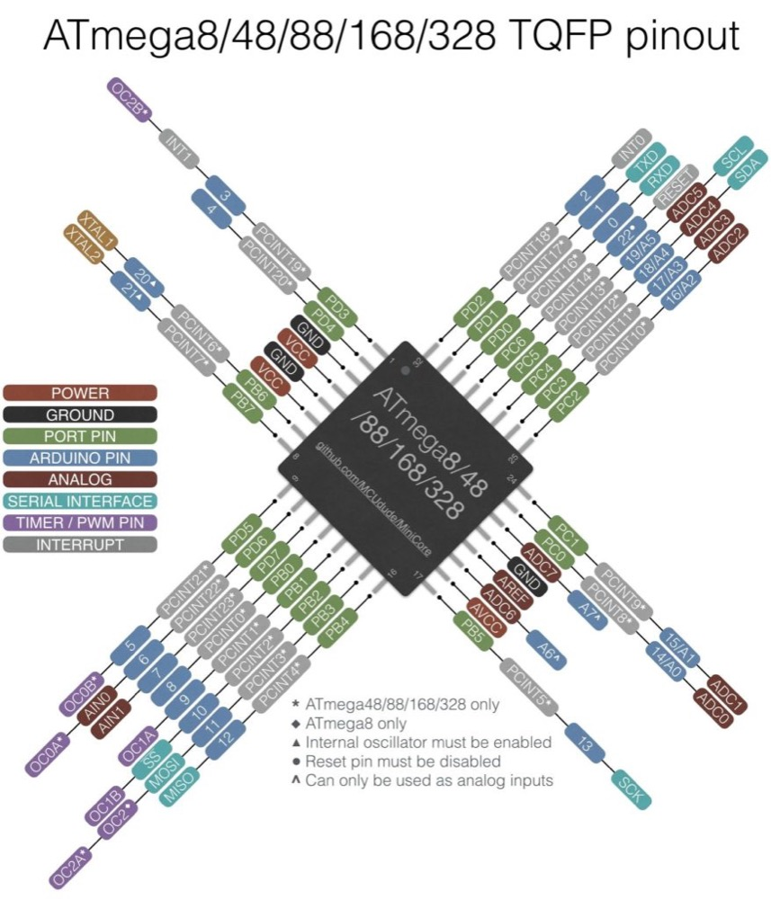
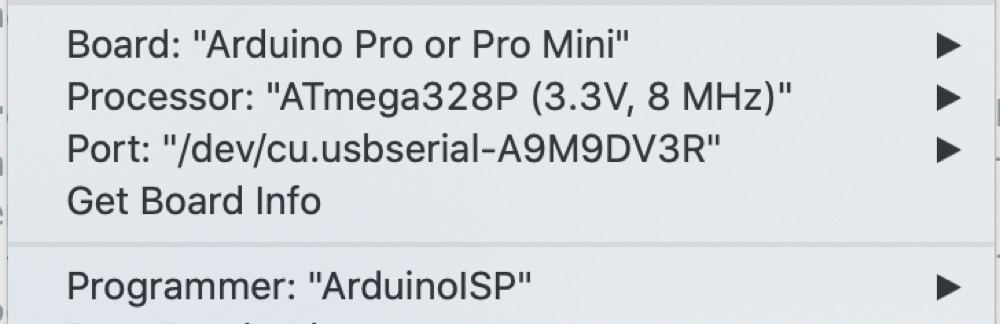

<!DOCTYPE html>
<html lang="en"></html>
<head>
  <meta charset="utf-8">
  <meta content="IE=edge" http-equiv="X-UA-Compatible">
  <meta content="width=device-width, initial-scale=1" name="viewport">
  <title> Rafael Rebolleda — Fab Academy 2020 Documentation</title>
  <!-- Google Fonts-->
  <link rel="stylesheet" href="https://fonts.googleapis.com/css?family=Catamaran&amp;display=swap">
  <link rel="stylesheet" href="../css/main.css">
</head>
<body> 
  <nav>
    <header>
      <ul>
        <li>Rafael Rebolleda</li>
        <li>ESNE (+ LEON)</li>
        <li>Madrid, Spain</li>
      </ul>
      <p class="bio">CX consultant and professor. Single, semi-remote Fab Acadeny student.</p>
    </header>
    <ol>
      <li><a class="red" href="../">About me</a></li>
      <li><a class="blue" href="../FP/">Final Project</a></li>
      <li><a class="blue" href="../DEV/">Project Development</a></li>
    </ol>
    <h1>Assignments</h1>
    <ol> 
      <li><a href="../W1/">Principles & Practices</a></li>
      <li><a href="../W2/">Computer Aided Design</a></li>
      <li><a href="../W3/">Computer Controlled Cutting</a></li>
      <li><a href="../W4/">Electronics Production</a></li>
      <li><a href="../W5/">3D Scan + Printing</a></li>
      <li><a href="../W6/">Electronics Design</a></li>
      <li><a href="../W7/">Computer Controlled Machining</a></li>
      <li><a href="../W8/">Embedded Programming</a></li>
      <li><a href="../W10/">Applications & Implications</a></li>
      <li><a href="../W13/">Intellectual Property</a></li>
    </ol>
  </nav>
  <main>
    <h1>W8: Embedded Programming</h1>
    <h2>The idea</h2>
    <p>As mentioned in the <a href="../W6/">Electronics Design</a> assignment, I built a "Hello Fab Kit board" so I could make the most of a single board due to restrictions in the use of the Fab Lab because of the pandemic.</p>
    <h3>The chip</h3>
    <p>I'm using the ATMEGA 328P. I didn't so much <i>chose</i> this chip; rather, I had one at hand when the pandemic had restricted access to the Fab Lab amd  slowed down online purchases. </p>
    <p>On the bright side, its use is very well documented and that would come in very handy to get up to speed quickly. </p>
    <p>I found <a href="http://ww1.microchip.com/downloads/en/DeviceDoc/Atmel-7810-Automotive-Microcontrollers-ATmega328P_Datasheet.pdf">this datasheet</a> from Atmel. I've got to say at first I was fairly impresses with the sheer length of it (and apparently it's not particularly long). It's amazing to see how consumer products have been simplified for non expert use. </p>
    <p>It was great to finally see firsthand where many terms I've heard come from, like "watchdog" or "interrupt".</p>
    <p>For a quick reference, I ended up coming back to this pinout diagram:</p>
    <h3>Programming Tests</h3>
    <p>In the <a href="../W6/">Electronics Design</a> assignment, I ended up burning the bootloader so it could be programmed via the Arduino IDE. Once that is done, I'll be using the following settings:</p>
    <p>Once this setup was running, I tried a basic sketch to test both LEDs, based on the "Blink" example provided by Arduino, but tweaked for the right pins onf my board:</p>
    <video src="../W6/double_blink.mp4" loop controls mute></video>
    <p>Here's another one to test the button, again based on the builit-in Arduino example of the same name:</p>
    <video src="ep_1.mp4" loop controls mute></video>
    <h2>Files</h2>
    <ul>
      <li><a href="double_blink.zip">"Double Blink</a></li>
      <li><a href="button.zip">Button</a></li>
    </ul>
  </main>
  <footer>
    <hr>
    <p><a rel="license" href="http://creativecommons.org/licenses/by-nc/4.0/"></a><br />This work is licensed under a <a rel="license" href="http://creativecommons.org/licenses/by-nc/4.0/">Creative Commons Attribution-NonCommercial 4.0 International License</a>.</p>
  </footer>
</body>